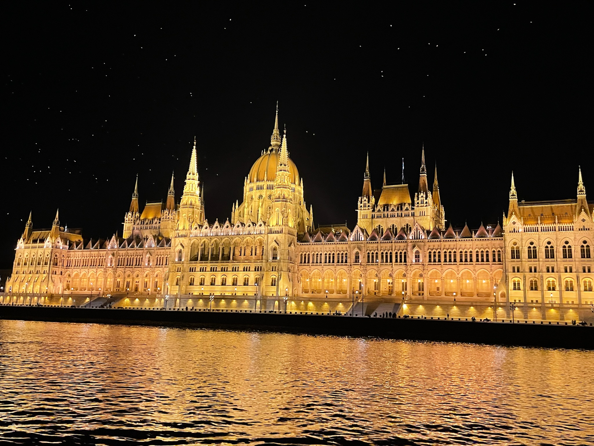

歴史溢れる街の観光地のご案内
ドナウ川クルーズから見る国会議事堂
世界で１番の大きさを誇り、ヨーロッパ大陸を縦断する“ドナウ川“
ハンガリーはまさにドナウ川が通る国のひとつで、クルーズに乗って
ブタペストの街を一望することが出来ます。中でも夜にライトアップ
される国家議事堂は“一生忘れられない光景“として有名です。
特に週末はチケットの予約な程に世界中から観光客が訪れます。
また、国会議事堂以外にも観光地であるブダ城や漁夫の砦を川の上から
眺めることが出来ます。是非、幻想的なクルーズからの景色をハンガリー旅行の
最高の思い出として記憶に残しましょう！

ブダ城ー歴史の丘に立つハンガリーの王宮
国会議事堂の対岸にあるブダ地区に立つ“ブダ城“は13世紀から続く歴史的な宮殿で、ハンガリー王の住む場所として使われてきました。城壁や要塞の面影を残しつつ、バロック様式の改修が行われた壮大なこの城は、ブタペストの街並みを見下ろせる丘の上に立っています。現在は国立美術館や歴史格物館として使われており、ハンガリーの歴史と、文化に触れることが出来ます。